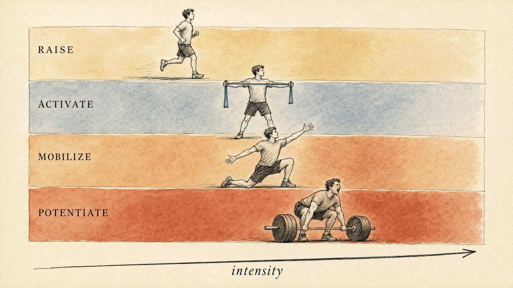
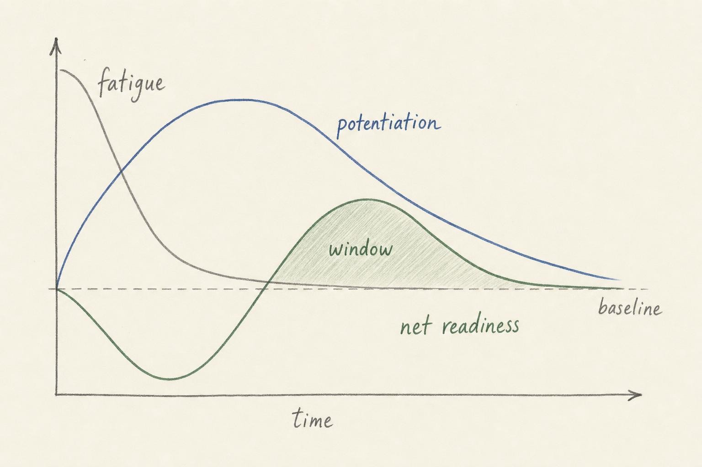

Waking Up the System
Priming, potentiation, and the minutes that decide whether the machinery hits its ceiling.
A jumper walks to the runway, chalks her hands, and loads a single near-maximal rep on the bar: one clean lift, rack it, sit down. Six minutes later she runs down the runway and clears three centimeters more than she managed cold. Nothing about her muscle mass changed in those six minutes. Nothing about her tendons or her leverages changed either. What changed was the state of the system delivering the signal. For a brief, decaying window, her nervous system was driving harder and her contractile machinery was primed to respond faster than it had been ten minutes earlier. Then the window closed, and by the time she lined up for a second attempt the advantage was gone.
Every earlier chapter in this course has been about what the nervous system can do and how that capacity gets compromised, by fatigue, by injury, by poor coordination. This chapter is about the lever a learner can pull deliberately, in the final minutes before it matters, to push that system toward its ceiling rather than away from it. If a nervous system can be fatigued and driven down, and the previous seven chapters have shown exactly how, then it stands to reason it can also be deliberately, temporarily driven up. That is the entire premise of a warmup done well, and of the sharper, more specific tool sitting inside it: post-activation potentiation (PAP), along with its longer-lasting cousin, post-activation performance enhancement (PAPE).
To keep the abstractions honest, this chapter follows one learner, Anton, a 29-year-old recreational long jumper who found a video explaining that heavy squats before a jump session could make him more explosive, and decided that if a little was good, more had to be better. He started loading three sets of heavy back squat triples about ninety seconds before every jump attempt at practice. His jumps got worse, not better, and he could not understand why a mechanism described as a performance booster seemed to be working against him. Anton is not a case to diagnose. He is a stand-in for an honest and extremely common misreading of a real phenomenon, and by the end of this chapter you will be able to say exactly where his plan went wrong, and why.
Notice, too, what makes his confusion so understandable. He was not wrong that heavy loading can potentiate a subsequent effort. He had read that finding correctly, from a source that summarized real research accurately. What he lacked was any sense of dosing, of the fact that the same tool applied a little differently produces an opposite result. A single well-timed effort and three fatiguing sets separated by too little rest are not points on the same line drawn slightly further along. They are, physiologically, close to opposite interventions, and the gap between them is exactly what this chapter exists to make visible.
The bottom line, first
Because this chapter exists to be applied, here is the decision frame before the theory that justifies it. A pre-performance sequence has exactly two jobs to do, and one thing it must never do in the process.
- Raise the general readiness of the whole system, temperature, blood flow, joint lubrication, and arousal. This part is cheap, low-risk, and essentially non-negotiable.
- Raise the specific readiness of the target task, rehearsing the exact pattern and velocities the task demands, and, when warranted, adding a heavy or explosive conditioning effort to potentiate the coming attempt.
- Not arrive fatigued. Every unit of readiness bought this way costs some fatigue. The entire craft of priming is spending that fatigue so net readiness peaks at the moment of the attempt, not before it and not long after it.
If you take away only one idea from this chapter, make it this one: potentiation and fatigue are two curves triggered by the very same effort, and performance is the difference between them (Tillin & Bishop, 2009). Everything that follows, how heavy a conditioning effort should be, how much of it to do, and how long to wait before attempting, is really just a matter of learning to manage where those two curves cross.
General versus specific: two jobs, not one
For a long time, "a warmup" meant undifferentiated jogging followed by static stretching, treated as one generic block with no internal structure. The working model this chapter uses separates the general raise from the specific preparation, because the two buy different things, and because they fail in different, instructive ways.
The general raise, buying temperature and conduction
The general portion of a warmup is largely a temperature story, and it is one of the best-established findings in this area of sport science (Bishop, 2003a; McGowan et al., 2015). Raising muscle temperature by only a couple of degrees decreases muscle and joint stiffness, speeds nerve conduction velocity, and shifts the force-velocity relationship so a muscle can produce more force at any given shortening speed. Metabolically, a modest temperature rise accelerates oxygen-uptake kinetics and increases the availability of anaerobic energy, both of which matter in the opening seconds of a hard effort. This general benefit is well supported at the level of the whole warmup, too: a broad meta-analysis found that some form of active warmup improved subsequent performance in a clear majority of the studies it reviewed, an unusually consistent finding for exercise science as a field (Fradkin et al., 2010).
Notice that one item on that list is neural, not muscular: faster nerve conduction. The general raise is not purely a tissue phenomenon. Warming the system speeds the signal itself, and a faster signal is the thread running through this entire course, from the reflex arcs of earlier chapters to the recruitment patterns ahead of us. This is also why a genuinely cold athlete underperforms even with technically flawless coaching. The signal simply arrives late, and cold tissue resists it once it does.
It is worth being honest about how modest the general raise looks in isolation, because that honesty is what makes the specific work that follows it so important. Temperature effects are real and worth every minute spent on them, but they are also blunt. Raising muscle temperature helps every task a person might attempt next, a sprint, a squat, a chess match requiring sustained focus, more or less equally. A general raise cannot tell the nervous system which task is coming. It cannot rehearse a takeoff angle, a bar path, or the timing of a reactive step. That is not a flaw in the general raise. It is simply the limit of what a non-specific intervention can accomplish, and it is exactly the gap the next stage of the warmup is built to close.
The specific preparation, rehearsing the pattern and priming the drive
Specific work accomplishes something temperature alone cannot: it rehearses the exact motor program the task requires and, when the tool is used deliberately, potentiates it. Rehearsal matters because the coordination and reflex systems covered earlier in this course are pattern-specific, not general. A sprinter's rehearsal starts are not cardiovascular exercise in disguise. They are the nervous system running through the timing of the actual event at progressively higher intensity, so the reflexive and feed-forward components of the movement are loaded and ready the instant the gun sounds.
Think back to how this course described motor learning and coordination in its earlier chapters. A movement pattern is not stored as an abstract instruction waiting to be issued from scratch each time. It is closer to a well-worn path through a network of connections, one that fires more cleanly and more quickly the more recently and specifically it has been rehearsed. A general raise does nothing to refresh that path. Only movement-specific rehearsal does, which is why an athlete who skips it can be fully warm, fully mobilized, and still technically sluggish on the very first real attempt of the day.
The Raise, Activate, Mobilize, Potentiate sequence, generally known by its acronym RAMP, is the most useful shorthand for organizing this progression (McGowan et al., 2015). Raise handles the general job described above. Activate and Mobilize bridge the gap into the pattern itself, taking joints through range and waking the muscles that will carry the coordination load. Potentiate is where the sharp tool in this chapter's title lives, and it is also where most mistakes happen.

What potentiation actually is
Post-activation potentiation was defined cleanly two decades ago as a transient increase in muscle contractile performance following prior contractile activity (Sale, 2002). Do something hard with a muscle, and for a short while afterward that same muscle produces more force, faster, than it did beforehand. That is the phenomenon in its simplest form. The genuinely interesting part is what is happening underneath it, and how long it actually lasts once you start timing it carefully.
Mechanism one: light-chain phosphorylation
The classic mechanism behind PAP is myosin regulatory light chain phosphorylation (Sale, 2002; Tillin & Bishop, 2009). After a strong contraction, the regulatory light chains sitting on the myosin molecule get phosphorylated, and this makes the actin-myosin cross-bridges more sensitive to calcium. For a given amount of calcium released into the muscle, you get more force in return, an effect most pronounced at low-to-moderate activation levels, and most pronounced of all in type II fibers, the fibers most responsible for fast, forceful contractions.
Here is the catch that reshaped how the whole field talks about this phenomenon: the half-life of that phosphorylation signal is roughly twenty-eight seconds (Blazevich & Babault, 2019). It decays fast, and by fast this chapter means genuinely fast. If light-chain phosphorylation were the entire story, the potentiating effect would be largely gone before an athlete finished re-racking the bar, let alone walked to the runway.
Mechanism two, and the reason the effect actually lasts: neural drive
Yet athletes routinely jump higher, throw farther, or sprint faster several minutes after a conditioning effort, long after the phosphorylation window should have closed. That mismatch between a twenty-eight-second mechanism and a multi-minute result is exactly why the field now separates classic PAP from post-activation performance enhancement, abbreviated PAPE, a related but distinct effect that persists for minutes rather than seconds and appears to be driven by more than one mechanism at once (Blazevich & Babault, 2019). Some of the candidate mechanisms for this longer effect involve increased muscle temperature and shifts in muscle water content, but the mechanisms this course cares most about are neural: heightened recruitment of high-threshold motor units, elevated motor-unit firing frequency, and improved motor-unit synchronization (Tillin & Bishop, 2009; Harrison et al., 2019).
Read those neural mechanisms against the material from earlier chapters and the pattern is unmistakable. Recruitment of high-threshold units is the size principle running all the way to its top end. Firing frequency is rate coding. Elevated central drive is the ceiling on voluntary output being pushed, temporarily, higher than it normally sits. Potentiation, in other words, is not some exotic new phenomenon bolted onto the nervous system. It is a temporary, deliberate upshift of the exact dials this course has spent seven chapters teaching you to read. A heavy conditioning contraction effectively tells the nervous system: we are recruiting the largest units available and driving them hard. That instruction carries over, briefly, into whatever effort comes next.
It helps to hold both mechanisms in mind at the same time rather than picking a favorite, because they are not competing explanations, they are two processes running on different clocks. In the first thirty seconds or so after a heavy conditioning effort, an athlete is benefiting from both light-chain phosphorylation and elevated neural drive at once, which is part of why a conditioning effort followed by almost no rest can still feel powerful in the moment even though it usually is not the right choice for a maximal attempt. By the two or three minute mark, the phosphorylation contribution has essentially vanished, and whatever performance boost remains is running on neural drive alone. By the eight to ten minute mark, even the neural contribution has typically faded back toward baseline. Knowing which clock is running at which moment is what separates a coach who can explain why a given rest interval worked from one who is simply repeating a number they once heard.
It is the net balance between potentiation and fatigue that dictates whether subsequent explosive performance is potentiated or impaired.
Tillin & Bishop, 2009
The trade-off that governs everything
Here is the core model, and it is simple enough to sketch on a napkin between sets. A conditioning effort triggers two responses at once, not one.
- A potentiation curve that boosts contractile and neural output, then decays over several minutes.
- A fatigue curve that suppresses output, then also decays, usually faster than potentiation does when the conditioning effort is dosed well.
Net readiness at any moment is potentiation minus fatigue. Immediately after the conditioning effort, fatigue is large and typically dominates, which means net readiness often sits below baseline right away. As fatigue clears faster than potentiation fades, net readiness climbs back above baseline, hits a peak, and then drifts down again as the potentiation itself decays. That stretch above baseline is the window this chapter keeps referring to. Perform inside it and an athlete is genuinely enhanced. Perform too early and the athlete is pre-fatigued. Perform too late and the potentiation has already evaporated, leaving nothing but an athlete who is simply warm.
It is worth sitting with why this shape, dip first, then rise, then fade, is not a design flaw but an unavoidable consequence of two processes running at different speeds. Fatigue is the faster reaction: it appears almost immediately after a hard effort and clears relatively quickly once the effort stops. Potentiation is the slower reaction: it builds alongside the fatigue but persists well after the fatigue has cleared. Any time two effects share a trigger but run on different clocks, their difference will trace exactly this kind of dip-then-rise curve. Once you see that the window is a mathematical consequence of two decay rates rather than some special trick of physiology, the whole model becomes far easier to apply to a situation this chapter has not explicitly covered.

Three variables move those two curves, and they happen to be the three levers an athlete or a coach actually controls.
Load and intensity of the conditioning effort
Heavier, more forceful conditioning efforts generally produce more potentiation, but they also produce more fatigue. A near-maximal heavy single potentiates strongly and, because the total volume involved is tiny, fatigues relatively little, which is exactly why the heavy single before a jump has become something of a signature move in this space. A set of ten hard repetitions also potentiates, but it buries the athlete in a volume of fatigue that takes far longer to clear. As a rule of thumb, intensity buys potentiation, while volume mostly buys fatigue (Tillin & Bishop, 2009; Seitz & Haff, 2016).
Recovery interval
This is the timing dial, and it is where most attempts at priming quietly fail. Rest too little and the athlete attempts on top of fatigue that has not resolved. Rest too long and the potentiation itself has faded, leaving no advantage to collect. Two independent meta-analyses converge on a similar bracket for most trained athletes, generally somewhere between three and twelve minutes, with heavier or higher-volume conditioning efforts typically needing the longer end of that range (Seitz & Haff, 2016; Wilson et al., 2013). Wilson and colleagues (2013) found that rest periods of roughly seven to ten minutes produced a larger effect than either shorter or longer rest windows in their pooled data, though the honest reading of these numbers is a bracket to start from, not a law carved into the sport. The right rest interval for a specific person and a specific dose is something found by testing, not by reading a chart.
Athlete characteristics
This is the variable people forget most often, and it might be the most consequential one of all. Stronger, more resistance-trained athletes potentiate more and fatigue less from an identical conditioning effort than less-trained athletes do (Seitz & Haff, 2016; Wilson et al., 2013; Sale, 2002). Trained athletes carry more type II fiber to phosphorylate, better-developed high-threshold recruitment to draw on, and greater resistance to fatigue in the first place. The corollary is blunt: priming through a heavy conditioning effort is a tool that works best on an already well-trained system. On a newer or less-trained athlete, the identical heavy single may deliver more fatigue than potentiation, and the window may never rise above baseline at all. The tool has to be matched to the system it is applied to, or it simply will not do what the literature promises.
There is a practical corollary worth stating plainly: training status is not a fixed label an athlete carries forever, it is a variable that shifts across a career and even across a single season. An athlete who could not usefully potentiate off a heavy single a year ago may be able to now, as their high-threshold recruitment and fatigue resistance have both improved through consistent training. This is one more reason the population-level brackets in this chapter are starting points rather than settled answers. The question is never simply does priming work, it is does priming work for this athlete, at this point in their development, on this day.
The interactive below turns that three-variable model into something you can actually feel. Set the intensity and volume of a conditioning effort, choose an athlete's training background, pick a rest interval, then take the attempt. Watch how the same conditioning effort can enhance one athlete and bury another, and how an identical dose can look completely different at thirty seconds of rest versus twelve minutes.
Working the cases
The model above is only useful once you can run it against real situations rather than abstractions. Here are the cases most commonly encountered in practice, worked through the same lens each time.
The heavy single before a jump
High intensity paired with tiny volume is close to the ideal potentiation-to-fatigue ratio available. A well-trained jumper works up to a heavy squat or trap-bar single, then rests. Because the fatigue generated by a single repetition is small and clears quickly, the window opens early and cleanly. In practice, this typically looks like one near-maximal effort, then four to eight minutes of rest, then the jump attempt. A very strong athlete may tolerate a shorter rest interval, while an athlete whose single felt grindy and slow should be given more time before attempting, since a slow bar speed on the conditioning lift is itself a signal that fatigue is running higher than expected.
The sprinter's rehearsal starts
Here the conditioning effort is the movement pattern itself, simply ramped up in intensity. Progressive rehearsal starts warm the tissue through the temperature mechanisms already covered, rehearse the exact reflexive and feed-forward timing the event demands, and lightly potentiate the system through their own rising intensity. The fatigue cost of this approach is kept deliberately low. Nobody sprints themselves tired inside a warmup. The final rehearsal effort typically sits a few minutes before the actual race, run near race intensity but stopped well short of failure.
Resistance priming hours before
This case operates on a different timescale entirely and is worth separating cleanly from the minutes-based examples above. Resistance priming is a short, low-volume strength-power session performed hours before competition, sometimes the same morning as an evening event, intended to elevate neuromuscular performance for as long as forty-eight hours afterward (Harrison et al., 2019). The underlying mechanisms overlap with the ones already discussed, firing frequency, recruitment, and synchronization among them, but because the fatigue from this kind of session clears over hours rather than minutes, the resulting window is far wider and considerably more forgiving of imprecise timing. This is priming at the level of a training session, not the level of a warmup, and it functions as a bridge toward the longer-timescale view this course takes up next.
The failure case: potentiation that becomes pre-fatigue
The instructive failures in this area share a common signature: too much volume, too little rest, or the wrong athlete for the tool. Five hard repetitions followed immediately by a walk to the starting line. A newer athlete handed a "heavy single" that is genuinely maximal for them and destabilizing rather than activating. A coach who watched the heavy-single trick work once and concluded that heavier and more must therefore be better. In every one of these situations, the fatigue curve is still dominant at the moment of the attempt, and the athlete performs below where a plain, unremarkable warmup would have left them. Priming of this kind is not free readiness. It is borrowed readiness, and it comes with a repayment schedule that arrives whether or not the athlete is ready to pay it.
A related failure worth naming separately is what might be called the stacking error: an athlete who potentiates successfully once, on the first attempt of the day, and then repeats the identical conditioning effort before every subsequent attempt without adjusting anything. Fatigue accumulates across a session in a way potentiation does not reliably keep pace with, particularly if rest between attempts is compressed by a competition schedule or a crowded training group. A conditioning effort that opened a clean window on attempt one can leave an athlete net-fatigued by attempt four, even though nothing about the protocol itself changed. Reading the athlete's actual output across the session, not just trusting the protocol that worked earlier, is what catches this before it costs a result.
Warming-up is vital for optimum performance, but the risk of fatigue from excessive pre-exercise activity, and minimizing the gap between warm-up completion and performance, are as important as the warm-up itself.
Bishop, 2003b
Designing the sequence
Put all of this together and a task-appropriate warmup reads as a progression of climbing specificity and intensity, with the potentiating effort, if one is used at all, placed so its window lands squarely on the actual attempt.
- General raise (3 to 6 min). Elevate temperature and blood flow. This step is cheap and essentially always worth including.
- Mobilize and activate (2 to 5 min). Take the joints through range and wake the muscles that will carry the pattern. This step bridges the general work into the specific.
- Movement-specific rehearsal (progressive). Run the actual pattern at climbing intensity. This is where the coordination and reflex systems from earlier chapters get loaded and readied.
- Potentiating effort (optional, used only when the task is explosive and the athlete is well-trained). One high-intensity, low-volume conditioning effort, followed by rest that is deliberately spent waiting for the window to open.
- The attempt, placed at the peak of net readiness: warm, rehearsed, potentiated, and not fatigued.
Two mismatches are responsible for sinking most otherwise-reasonable warmups. The first is a potentiating effort with no real rest built in afterward, so the athlete pays the fatigue cost in full and collects none of the potentiation on offer. The second is a warmup that never becomes specific at all: beautifully raised in temperature, thoroughly mobilized, but the actual motor program was never rehearsed, so the reflexive and feed-forward systems arrive at the task cold, having never been shown what is about to be asked of them. The builder below lets you construct both failures deliberately, and then correct them.
It is also worth planning for the practical reality that competition and training rarely hand an athlete a perfectly controlled clock. A meet can run behind schedule, a coach can be called to warm up a second athlete, a call room can hold a competitor far longer than anticipated. Building the sequence with an approximate hold point, a stage where the athlete can pause for several minutes without losing the general raise or the specific rehearsal, protects the plan from exactly this kind of disruption. The one component that tolerates almost no slack is the potentiating effort, precisely because its window is the narrowest of the four. If a schedule is unpredictable, it is often wiser to place the potentiating effort as late as realistically possible, or to skip it in favor of a slightly longer specific rehearsal, than to gamble on a window that a delay could close before the attempt arrives.
Use the tool below to build a four-block warmup for a given task, in whatever order you choose, and see how the sequence scores on neural readiness, specificity, and fatigue cost. Put the potentiating block in the wrong slot, or leave out rehearsal entirely, and the builder will flag exactly why the sequence underperforms.
Honest limits
Two cautions keep everything in this chapter from hardening into dogma. First, the effect sizes involved are meaningful but genuinely modest, not the dramatic transformation a phrase like "unlock your potential" tends to imply. A meta-analysis by Seitz and Haff (2016) puts the pooled effect size (ES) at roughly 0.29 for jump performance, 0.26 for throwing performance, and 0.51 for sprint performance. Priming sharpens an athlete who is already well-prepared. It does not rescue one who is not, and no amount of clever timing substitutes for the years of training that make an athlete's tissue capable of potentiating strongly in the first place.
Second, individual variability here is large, larger than most of the tidy brackets in this chapter suggest at first glance. The rest and load ranges discussed above are population averages drawn from group data, and a specific athlete has a specific optimum that is found by testing across a season, not by looking a number up in a table and trusting it blindly. The model built across this chapter tells you which direction to move: more rest or less, heavier or lighter, more volume or none at all. Watching the actual output, bar speed on the conditioning lift, jump height on the attempt, reaction time off the blocks, tells you when the right combination for a particular athlete has actually been found.
A third, quieter limit deserves mention: most of the supporting research measures a single quality in a controlled setting, a jump, a sprint, a throw, immediately after a conditioning effort. Competition rarely isolates a single quality that cleanly. A jumper's actual event includes an approach run, a takeoff, and a landing under fatigue accumulated across several earlier attempts, not a single isolated vertical leap performed fresh in a laboratory. None of this invalidates the underlying mechanism, but it is a reminder that a technique validated in a tightly controlled study still has to be tested, adapted, and re-tested against the messier shape of a real event before it can be trusted there.
Where this chapter stops: priming advice versus individual judgment
Before moving to the case that closes this chapter, it is worth naming the frame that governs everything in it, because it shapes what these pages are for and what they are deliberately not for. This chapter explains mechanisms so a learner can reason about priming and warmups with genuine understanding. It does not evaluate anyone's specific pain, injury history, or fitness to train, and it is not a substitute for judgment that belongs to a qualified professional.
That boundary is not paperwork bolted onto the science. It follows directly from what a conditioning effort actually is: a real physical stress applied to real tissue. A heavy near-maximal single is, by design, a demanding effort, and demanding efforts interact with old injuries, current pain, and individual circumstances in ways this chapter cannot see or account for. A learner who understands post-activation potentiation deeply is exactly the kind of learner who should recognize when a question has stopped being about general physiology and started being about a specific body, with a specific history, in front of a specific professional.
This matters more, not less, once a learner has absorbed the mechanism in this chapter, because a confident model of how something works is precisely what makes overreach feel justified. Understanding why intensity and rest interact the way they do does not qualify anyone to clear a person with a healing joint sprain for a near-maximal single, or to decide that a lingering ache is safe to load through because the physiology of potentiation sounds compelling. Mechanism explains what a healthy system does under a given stimulus. It says nothing about whether a particular system, on a particular day, is healthy enough to receive that stimulus in the first place. That second question is always a clinical one, not an educational one.
Anton's situation is a useful illustration of why this boundary matters even in a topic as seemingly low-stakes as warmup design. Loading heavy conditioning efforts before every jump attempt is not a decision to make casually, particularly for a learner without a strength-training background, without supervision, and without a plan for how the body should respond to a genuinely heavy near-maximal load. The physiology in this chapter explains why his approach was probably backfiring on the fatigue-versus-potentiation math. It does not, and should not, stand in for an assessment of whether that loading was appropriate for his body in the first place. That assessment belongs to a qualified coach or clinician working with him directly, not to a chapter in a course.
Case study: Anton and the squat he added before every jump
Run Anton's plan through the fatigue-versus-potentiation model and the problem becomes clear almost immediately, not as a mystery but as an entirely predictable outcome of the dosing he chose. Start with the conditioning effort itself: three sets of triples is a meaningful volume of heavy work, not the single, tiny-volume effort that produces the favorable ratio of potentiation to fatigue described earlier in this chapter. Volume is exactly the variable that drives fatigue rather than potentiation (Tillin & Bishop, 2009; Seitz & Haff, 2016), and Anton had unknowingly maximized the fatigue side of the ledger while assuming he was maximizing the potentiation side.
Now consider the rest interval, or rather the near absence of one. Ninety seconds sits close to the very short end of anything reported in the literature as producing a useful window, and it falls well inside the period where fatigue from a genuinely heavy set is still dominant (Seitz & Haff, 2016; Wilson et al., 2013). At ninety seconds after three sets of heavy triples, Anton was not attempting inside the enhancement window described earlier in this chapter. He was attempting on top of largely unresolved fatigue, which is precisely the failure case worked through above.
Finally, consider Anton himself as an athlete. With roughly a year of structured strength training, he sits closer to the newer-trainee end of the training-status spectrum than to the well-trained end that potentiates strongly and fatigues comparatively little (Seitz & Haff, 2016; Wilson et al., 2013; Sale, 2002). For an athlete at his stage, an aggressive heavy-conditioning protocol was always likely to tip the fatigue-potentiation balance further toward fatigue than it would for a decade-trained lifter attempting the identical sets.
None of this settles whether Anton should be squatting heavy at all, whether his particular body was ready for that loading, or whether some other factor entirely was contributing to his declining jump distances. Those are exactly the kinds of questions that belong with a coach who can watch him move and, where relevant, a clinician who can evaluate him directly, not with a chapter explaining a general mechanism. What this chapter can offer Anton is a clear account of why his specific implementation of a genuinely real phenomenon was working against him: too much volume, too little rest, and a training background not yet suited to the aggressive version of the tool he chose. Adjusted toward a single heavy effort and a rest interval closer to four to eight minutes, the same underlying idea he found in that video might do exactly what it promised. The idea was not wrong. The dosing was.
Key Takeaways
- A pre-performance sequence has two jobs: raise general readiness (temperature, conduction, arousal) and raise specific readiness (rehearse the pattern, optionally potentiate) without arriving at the attempt fatigued.
- Post-activation potentiation (PAP) is a transient rise in contractile performance after a hard prior contraction. Classic PAP, driven by light-chain phosphorylation, has a half-life of roughly twenty-eight seconds, but the practically useful minutes-long enhancement, called post-activation performance enhancement (PAPE), runs largely on neural drive: recruitment, firing frequency, and synchronization.
- Potentiation and fatigue are two decaying curves triggered by the same conditioning effort. Net readiness is their difference, and the above-baseline window is where an attempt should land.
- Intensity buys potentiation; volume mostly buys fatigue. Favor a high-intensity, low-volume conditioning effort. The heavy single is the archetype for good reason.
- Rest is the timing dial: roughly three to twelve minutes for most trained athletes, with heavier or higher-volume conditioning generally needing longer. Too short means pre-fatigue; too long means the potentiation has already faded.
- Stronger, more resistance-trained athletes potentiate more and fatigue less from an identical conditioning effort. Priming through a heavy conditioning effort is a tool best matched to an already well-trained system.
- Effect sizes are real but modest, and individual variability is large. The model gives direction; measured output, such as bar speed or jump height, gives the actual answer for a specific athlete.
This chapter worked at the timescale of minutes, the state that can be deliberately shifted in the moments right before performance. The next chapter zooms all the way out to the timescale of weeks and months, examining how training is programmed across a full cycle so the ceiling a learner is priming toward is itself climbing over time. Session-level readiness meets long-term adaptation, and the two turn out to follow many of the same underlying rules.
References
Bishop, D. (2003a). Warm up I: Potential mechanisms and the effects of passive warm up on exercise performance. Sports Medicine, 33(6), 439-454. https://doi.org/10.2165/00007256-200333060-00005
Bishop, D. (2003b). Warm up II: Performance changes following active warm up and how to structure the warm up. Sports Medicine, 33(7), 483-498. https://doi.org/10.2165/00007256-200333070-00005
Blazevich, A. J., & Babault, N. (2019). Post-activation potentiation versus post-activation performance enhancement in humans: Historical perspective, underlying mechanisms, and current issues. Frontiers in Physiology, 10, 1359. https://doi.org/10.3389/fphys.2019.01359
Fradkin, A. J., Zazryn, T. R., & Smoliga, J. M. (2010). Effects of warming-up on physical performance: A systematic review with meta-analysis. Journal of Strength and Conditioning Research, 24(1), 140-148. https://doi.org/10.1519/JSC.0b013e3181c643a0
Harrison, P. W., James, L. P., McGuigan, M. R., Jenkins, D. G., & Kelly, V. G. (2019). Resistance priming to enhance neuromuscular performance in sport: Evidence, potential mechanisms and directions for future research. Sports Medicine, 49(10), 1499-1514. https://doi.org/10.1007/s40279-019-01136-3
McGowan, C. J., Pyne, D. B., Thompson, K. G., & Rattray, B. (2015). Warm-up strategies for sport and exercise: Mechanisms and applications. Sports Medicine, 45(11), 1523-1546. https://doi.org/10.1007/s40279-015-0376-x
Sale, D. G. (2002). Postactivation potentiation: Role in human performance. Exercise and Sport Sciences Reviews, 30(3), 138-143. https://doi.org/10.1097/00003677-200207000-00008
Seitz, L. B., & Haff, G. G. (2016). Factors modulating post-activation potentiation of jump, sprint, throw, and upper-body ballistic performances: A systematic review with meta-analysis. Sports Medicine, 46(2), 231-240. https://doi.org/10.1007/s40279-015-0415-7
Tillin, N. A., & Bishop, D. (2009). Factors modulating post-activation potentiation and its effect on performance of subsequent explosive activities. Sports Medicine, 39(2), 147-166. https://doi.org/10.2165/00007256-200939020-00004
Wilson, J. M., Duncan, N. M., Marin, P. J., Brown, L. E., Loenneke, J. P., Wilson, S. M. C., Jo, E., Lowery, R. P., & Ugrinowitsch, C. (2013). Meta-analysis of postactivation potentiation and power: Effects of conditioning activity, volume, gender, rest periods, and training status. Journal of Strength and Conditioning Research, 27(3), 854-859. https://doi.org/10.1519/JSC.0b013e31825c2bdb